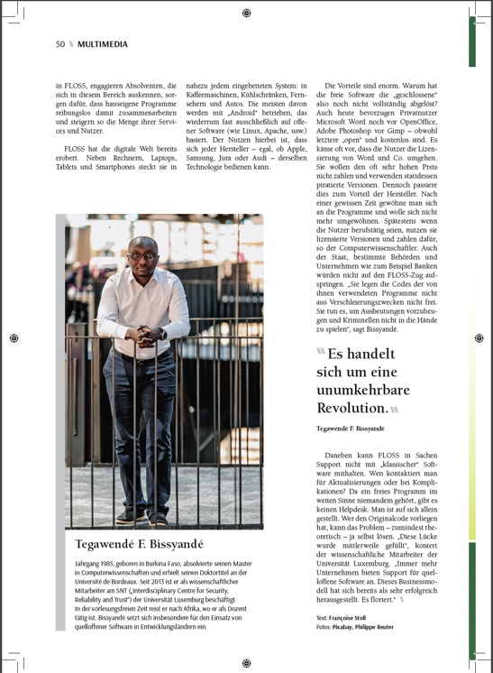

UC Berkeley Extending and Structuring User Queries for Efficient Free-form Code Search
March 19, 2018 - Berkeley, California, USA / Talk for team of Koushik Sen
Facebook FaCOY: a Code-to-Code Search Engine
March 21, 2018 - Palo Alto, California, USA / Talk for team of Satish Chandra
KTH Royal Institute of Technology Free-form and Code-to-Code Search: Leveraging Q&A Data for Translating between Query Terms and Code Tokens
September 26, 2018 - Stockholm, Sweden / Invitation by Martin Monperrus
|

Interview on the Open Source irreversible revolution - LaRevue |